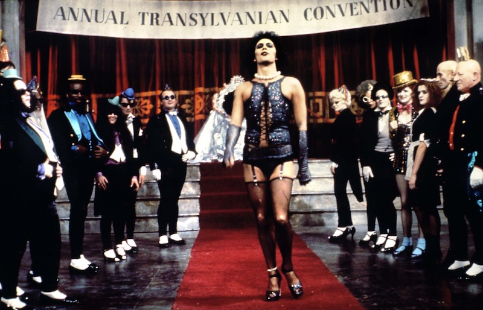
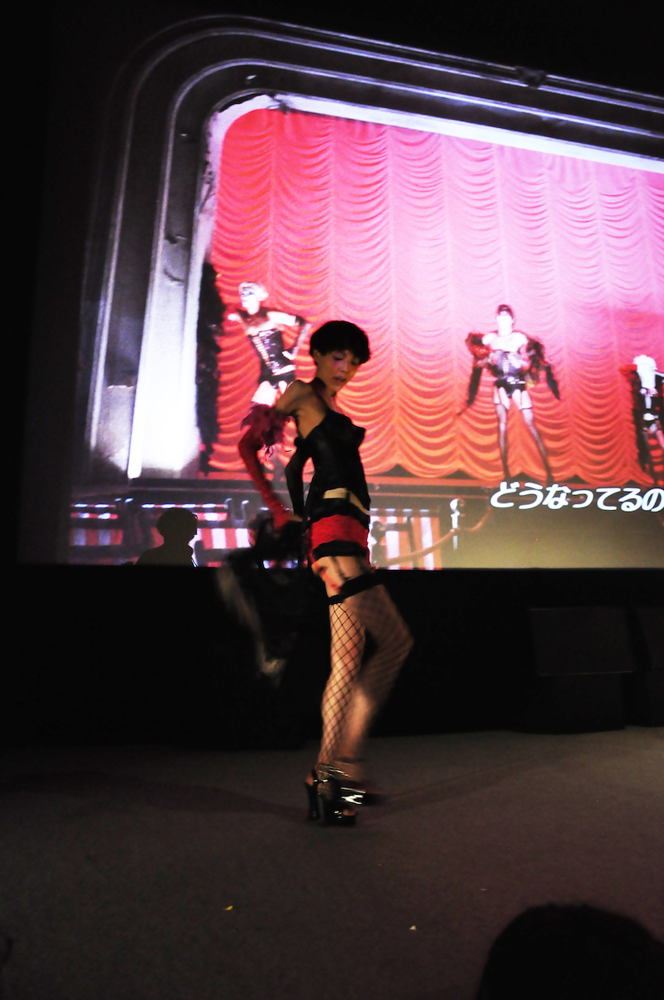

LIP'S Presents "Rocky Horror Picture Show" performance screening
9/23(Fri) 21:00
THE ROCKY HORROR PICTURE SHOW

©HOLLYWOOD CLASSICS, ©20TH CENTURY FOX
1975 / United Kingdom / 100min
Director, Screenplay: Jim Sherman
Starring: Tim Curry, Susan Sarandon, Meat Loaf, Richard O'Brien
Classic of cult movie. The audience continue to tremendous support for this movie, it always has been screened at somewhere around the world. Box office to date has earned more than 100 times of the production costs. Although it depicts a bizarre experience that couples who visited a old castle is involved as a rock musical, it is not fun just see this movie. Join and experience!
* How to enjoy the Rocky Horror Picture Show
Early three years from the recorded previous screening that Kanazawa Film Festival largest ever mobilization.
... It is time when Miyako hall dyed rosy again!
Also this time Rocky Horror Picture Show fan club "LIP'S" will aggressive and gently lead you who the first time experience!
■ only this rule
Water, rice, fire, are strictly prohibited
Toss just above when you throw things
* Instead, throw in just above the confetti and toilet paper is OK.
■ Are nice to do that?
It's fine. Singing and dancing along with the progression of the story, sometimes (or much of) said "come on!" is participatory screening fanon.
■ What is "time warp"?
Why dance in the Rocky Horror has been important.
There is also choreography lecture of LIP'S, ayrone can dance easily.
■ How to use props
・newspaper
In the rain, a scene toward the castle.
A character wear a newspaper instead of the umbrella, so we will wear it together.
・Pen light or psyllium
“There’s a Light”
Since stupid couple sing ~We can see the light!"", let's raise shiny stuff instead of lighter. It is OK, even the monitor of the smartphone.
・Confetti
Any time OK when you got excited.
We must do it while the scene that Frank and Rocky disappear into the bedroom in the wedding!
・Cracker
It is OK, If you feel "Wow!"
・Noise maker
When the timing that guests play the rattle sound, let's ring together.
★ access to LIP'S of FB page If you need to know more.
So we're looking forward to seeing you at the venue!
Let's do the time warp again!
LIP'S chairman Arthur Takehara
